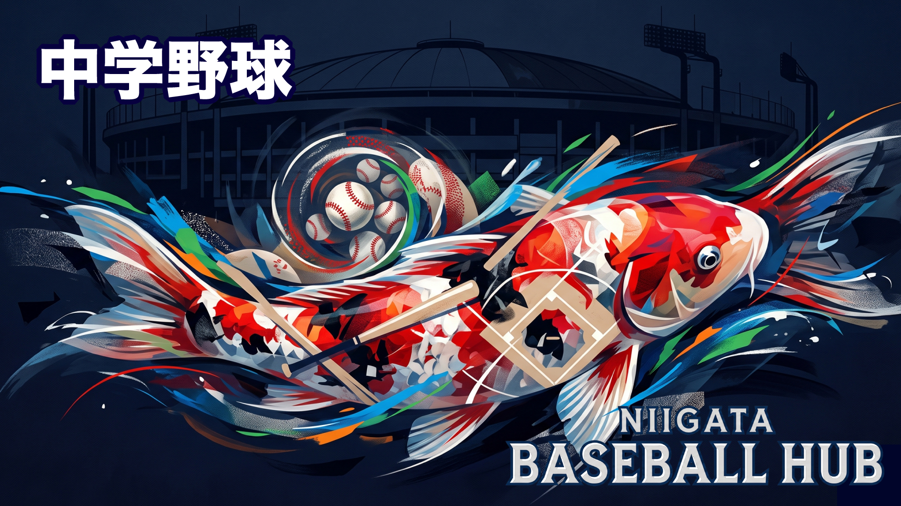

⚾
JUNIOR HIGH SCHOOL BASEBALL
中学野球
リトルシニア12・ボーイズ3・ヤング1・軟式クラブ約70チーム。公式サイト・Instagram・Facebookリンクつき。
101
チーム数（硬式・軟式合計）
クラブチーム一覧
CLUB TEAMS信越連盟・新潟ブロック所属の12チームです。公式サイト・SNSへは各ボタンからアクセスできます。
上越シニア
リトルシニア
エリア上越市
柏崎シニア
リトルシニア
長岡シニア
リトルシニア
長岡東シニア
リトルシニア
エリア長岡市東部
三条シニア
リトルシニア
エリア三条市
NGM新津五泉村松シニア
リトルシニア
新潟シニア
リトルシニア
新潟西シニア
リトルシニア
新潟東シニア
リトルシニア
新潟江南シニア
リトルシニア
新潟北シニア
リトルシニア
エリア新潟市北区
新発田シニア
リトルシニア
エリア新発田市
新潟県内のボーイズリーグ・ヤングリーグ所属チームです。なおポニーリーグは新潟県内に加盟チームが確認されていません。
新潟ボーイズ
ボーイズ
Unites Niigata（ユナイツ新潟）
ボーイズ
エリア新潟市
備考新潟西ボーイズ登録名。小中一貫（小学部＝リトルリーグ／中学部＝ボーイズリーグ）
上越ボーイズ
ボーイズ
新潟ヤング
ヤング
上越ヤング
ヤング
エリア上越市
所属全日本少年硬式野球連盟（ヤングリーグ）
部活動地域移行が進み、軟式野球でも学校の枠を超えた地域クラブが急増しています。新潟クラウン（@niigata.crown）は2019年設立の県内初の中学軟式クラブです。
📍 新潟市
中央区・東区軟式
鳥屋野BC
柳都BC
上山BC
宮浦BC
東新潟BC
新潟石山BC
西区・西蒲区軟式
Vertex
黒埼BC
西新潟BC
小針BC
関屋BC
巻クラブ
江南区・秋葉区軟式
江南BC
山潟BC
秋葉BC
新津第二BC
NEOX
Growth.b.b
北区・南区軟式
北学BBC
Rinko
白根軟式野球倶楽部
ポルテBC
小新ビッグベアーズ
新潟クラウン・NBCクラブ
新潟クラウン@niigata.crown
NBC@niigata_baseball_connection
CROWN GIRLS女子専用
📍 下越地区（新発田・村上・阿賀野・五泉 他）
新発田・胎内・聖籠軟式
新発田スリースターズ
新発田BRAVE BC
SHIBATA R.E.O.S
胎内BC
聖籠BC
村上・阿賀野・五泉軟式
村上東BC
朝日BC
阿賀野BBC
五泉BC
NEXUS
新潟North
佐渡市軟式
両津
佐和田
金井アンビシャス
南佐渡
佐渡BASE
📍 中越地区（長岡・三条・見附・十日町・魚沼 他）
長岡市・三条市軟式
長岡WESTBC
A.M.OreNagaoka
東北BC
トライスターズBC
出雲崎BC
TKホープス
三条・燕・弥彦軟式
弥彦
県央クラウン三条・燕
大和BC
栄
見附南・見附クラブ合同
三条二・三条三・大崎合同
十日町・魚沼・南魚沼軟式
十日町WEST
八海
塩沢４UNITY
📍 上越地区（上越・妙高・糸魚川）
上越市周辺軟式
上越地区 各中学校 野球部
地域クラブ（随時増加中）
※「合同」は複数の中学校が合同で出場するチームです。軟式クラブの詳細・最新情報は 新潟県中学校体育連盟 でご確認ください。
大会情報
TOURNAMENTS
硬式・主要大会
全国・信越連盟レベル
リトルシニア 全国選抜大会（大阪）
リトルシニア 林大会（全国・信越から2チーム）
ジャイアンツカップ（東京ドーム）
リトルシニア 日本選手権大会
ボーイズリーグ 春季全国大会
軟式・主要大会
全国・中体連レベル
全国中学校軟式野球大会（全中）
新潟県中学校総合体育大会 野球競技
新潟県中学校秋季野球大会
全国中学生都道府県対抗野球大会（伊豆）
ローカル大会
新潟県・地区内
リトルシニア 新人大会（新潟ブロック）
リトルシニア 春季大会（新潟ブロック）
新潟県中学軟式 各地区大会（全日本少年軟式野球予選）